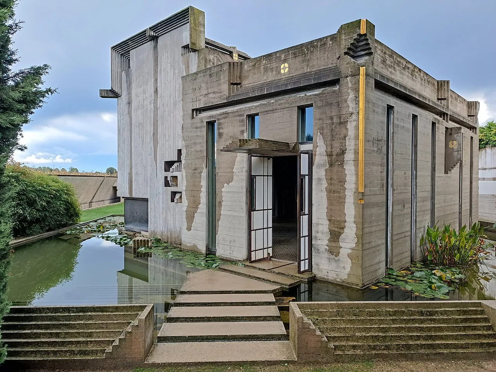
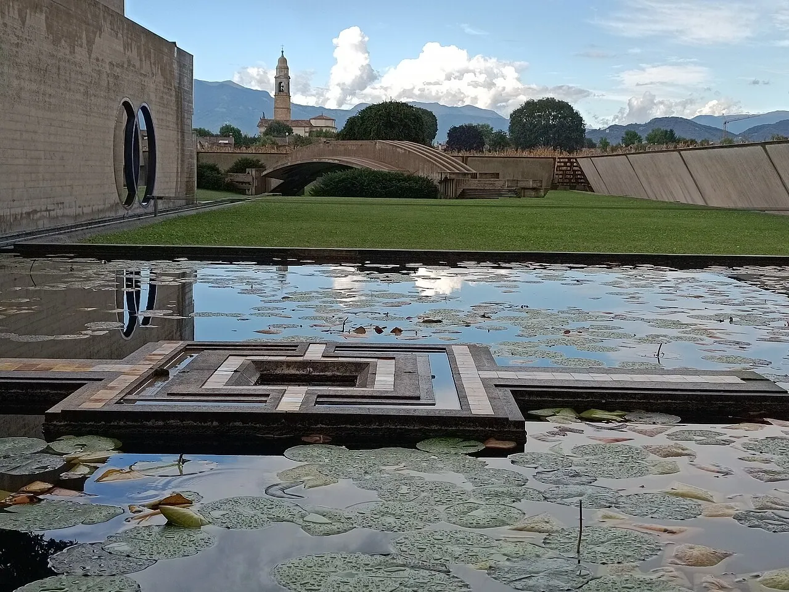
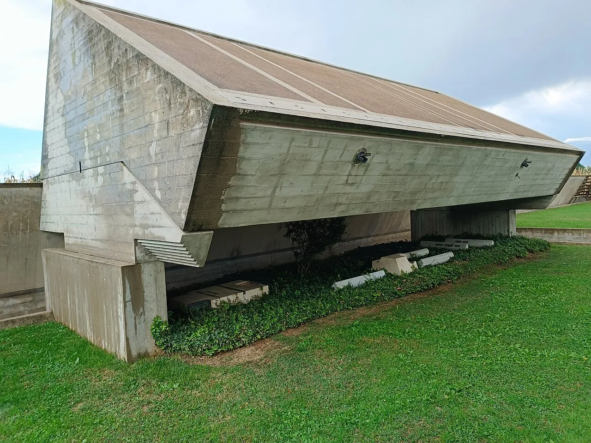
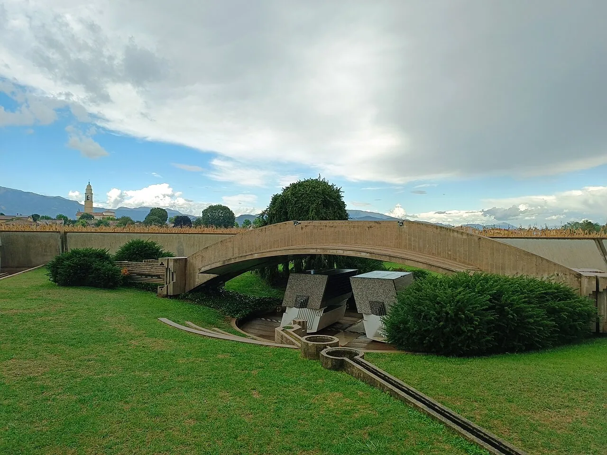
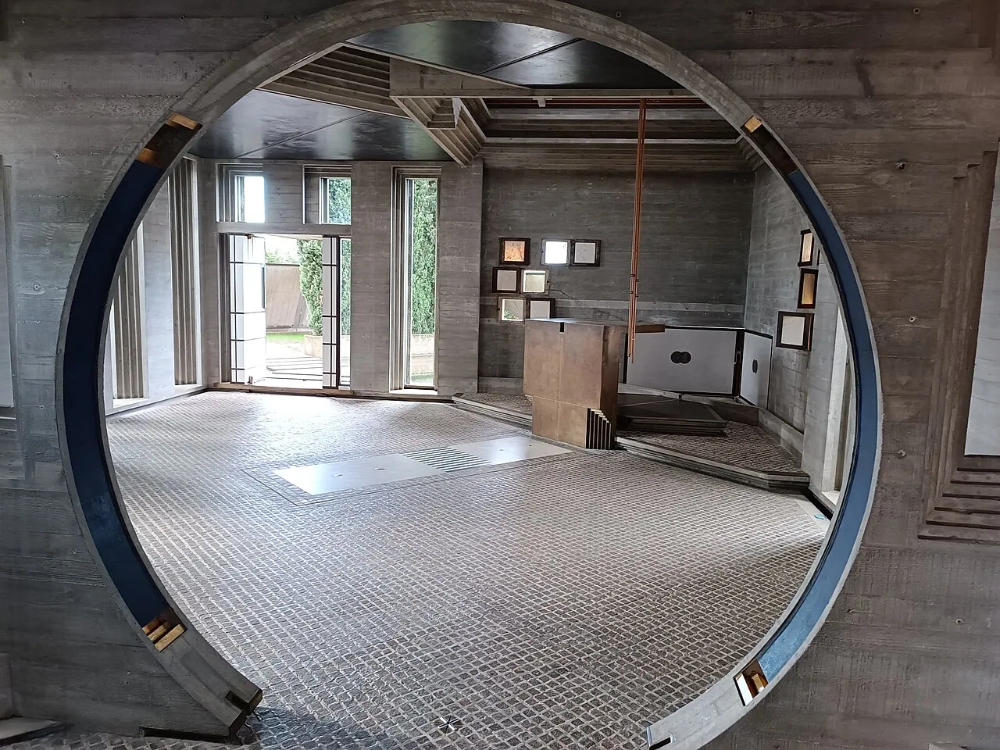
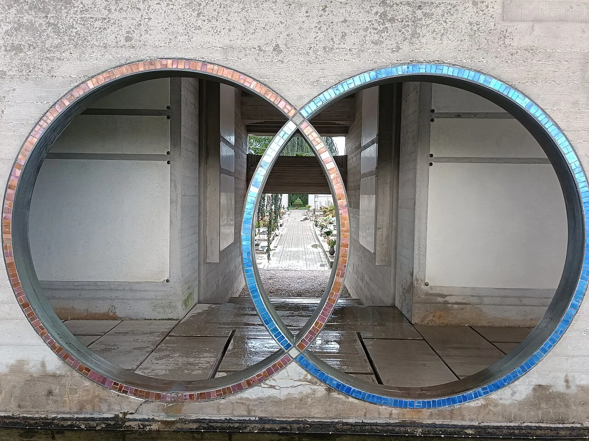
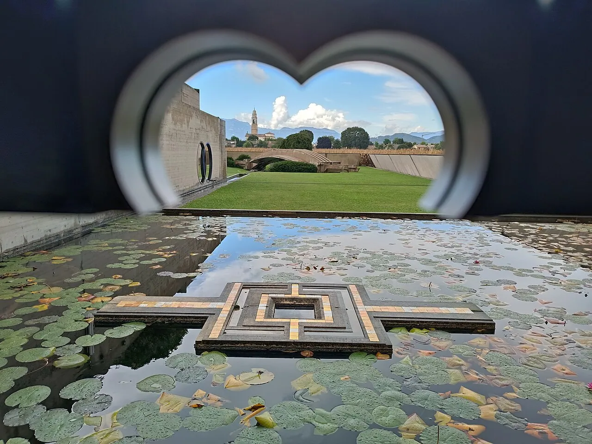
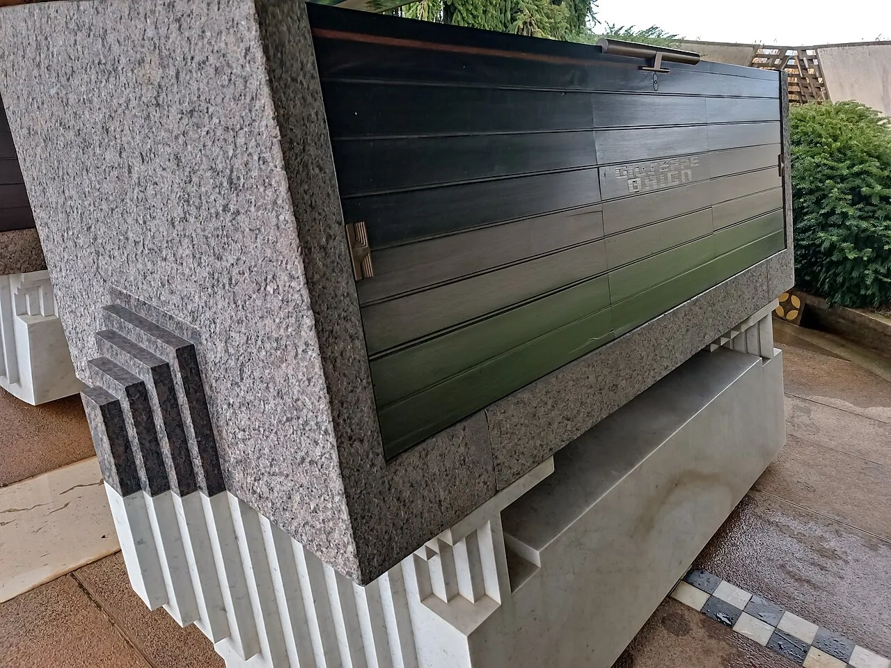

1/8 · Exterior · tomba BrionPhoto: Viaggiamocela · CC BY-SA 4.0 · source
2/8 · Exterior · tomba BrionPhoto: Viaggiamocela · CC BY-SA 4.0 · source
3/8 · Exterior · tomba BrionPhoto: Viaggiamocela · CC BY-SA 4.0 · source
4/8 · Exterior · tomba BrionPhoto: Viaggiamocela · CC BY-SA 4.0 · source
5/8 · Interior · tomba BrionPhoto: Viaggiamocela · CC BY-SA 4.0 · source
6/8 · Detail · tomba BrionPhoto: Viaggiamocela · CC BY-SA 4.0 · source
7/8 · Detail · tomba BrionPhoto: Viaggiamocela · CC BY-SA 4.0 · source
8/8 · Detail · tomba BrionPhoto: Viaggiamocela · CC BY-SA 4.0 · sourceReligious · Late modernism
Brion Cemetery
Carlo Scarpa · San Vito d'Altivole, Italy · 1978
Key featuresConcrete, water and interlocking circles: a lesson in detail and procession.
- Architect
- Carlo Scarpa
- Place
- San Vito d'Altivole, Italy
- Year
- 1978
- Typology
- Religious
- Movement
- Late modernism
- Region
- Europe
See it on the wall